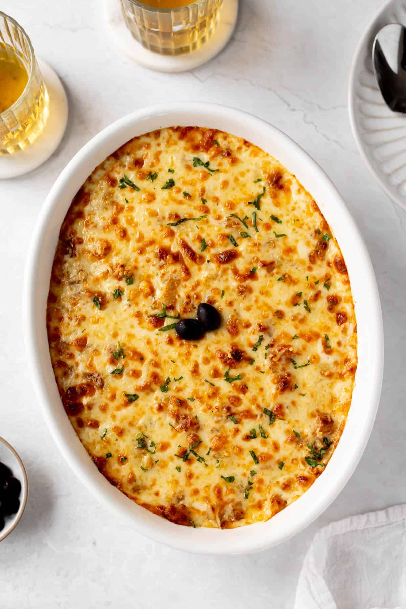
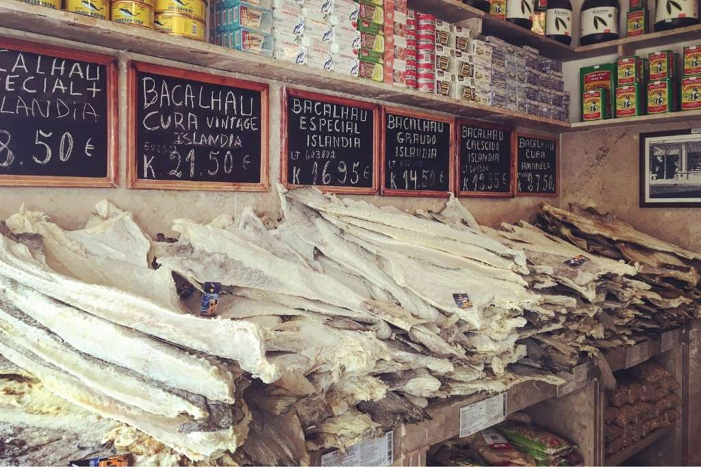

Bacalhau com natas Bacalhau com natas is a Portuguese dish made from salted cod, onions and potatoes in a creamy bechamel sauce. It's topped with shredded cheese and baked in the oven until it's brown and bubbly.Bacalhau, or codfish, took us by surprise in Portugal. The simplicity of the dish, the multiple variations and cooking styles, and the rich flavors made it land on our personal list of “top 100 authentic food experiences before I die.” There are over 365 ways of preparing bacalhau, and some say over 1,000 ways of serving it. While in Portugal, we eagerly ate our way through many different Portuguese cod fish dishes.

PREP TIME
40 mins
COOK TIME
20 mins
SOAK TIME
2
TOTAL TIME
1 hr
Most recipes I found have salt cod, potatoes, and onions as a base. Many of the recipes also layered in sliced fresh tomatoes, which would be perfect in the summertime. I've double-layered this dish in a Dutch oven and cooked it on the stove-top. Most recipes I found used a broad casserole dish, only had one layer of fish, and baked it in the oven. The hard boiled eggs, surprisingly, really work with the flavors of this dish. There are 1001 ways to prepare Bacalhau (salt cod), but there is only one Bacalhau Recipe the Portuguese keep faithful to. It goes by several names like Bacalhau á Lagareiro, Bacalhau no Forno or Bacalhau Assado com batatas a murro. These are all variations of the same principle of charcoal grilling ( in Summer) or oven roasting (in winter) the cod-fish and serving it with an assortment of vegetables, most notable of which are the “punched” potatoes baked in the oven. Some of you (especially the Portuguese Nationals) might think that I am absolutely crazy in implying that these different Bacalhau recipes are similar. Let me assure you that I am fully aware of how better (to my taste) a charcoal grilled piece of salt cod tastes when compared to oven roasted. The same for the oven punched potatoes vs normal boiled ones. All I am trying to do is to provide a comprehensive Bacalhau recipe guide to all those who were not already eating Bacalhau 3 months after being born.
he Portuguese dominated cod fishing until approximately the 16th century, when other countries, mainly England, gained prominence and a monopoly on this activity. However, with the rise of the Estado Novo (New State) in Portugal in 1933, there was a food shortage crisis in the country. Faced with this situation, the Portuguese returned to the sea through a state campaign, guaranteeing almost the totality of cod for the country’s internal consumption. With the end of Salazarism, imports were liberated, and cod fishing by the Portuguese decreased drastically. Today, most of the codfish consumed in the world comes from Russian, Norwegian, and Icelandic fisheries.
Although it takes center stage on Christmas, bacalhau is part of our everyday life, like a baguette to the French and fries to the Belgian. Walking through a food market in Portugal, you will sense the smell of cod from a mile away. While the scent might bother tourists, to the Portuguese, it brings a sense of comfort. Kilos of salted cod will be stacked up on tables, with customers touching the product to find the perfect one for their meal. Whether Bacalhau à Brás, a shredded cod dish with eggs, or Bacalhau à Lagareiro, baked cod with potatoes, the cod you picked out at the local market matters. Not just for its taste, but due to its cultural significance and heritage, as well as the belief that we must support Portuguese fishmongers, usually older men and women. However, the price of cod has been increasing exponentially, where today most cannot afford a whole cod. It seems that unfortunately, cod could be on the way to becoming, once again, a product available only to the most wealthy.